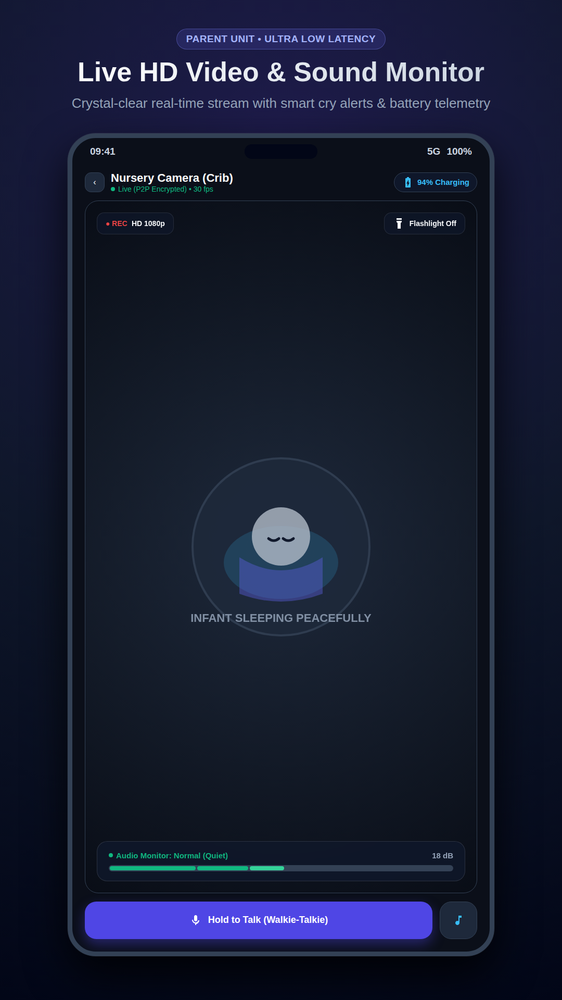
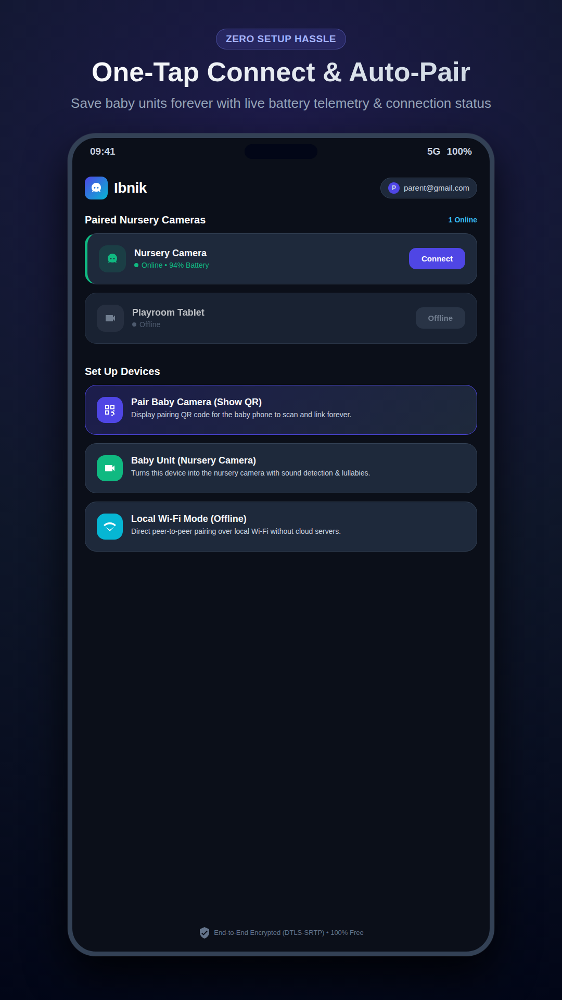
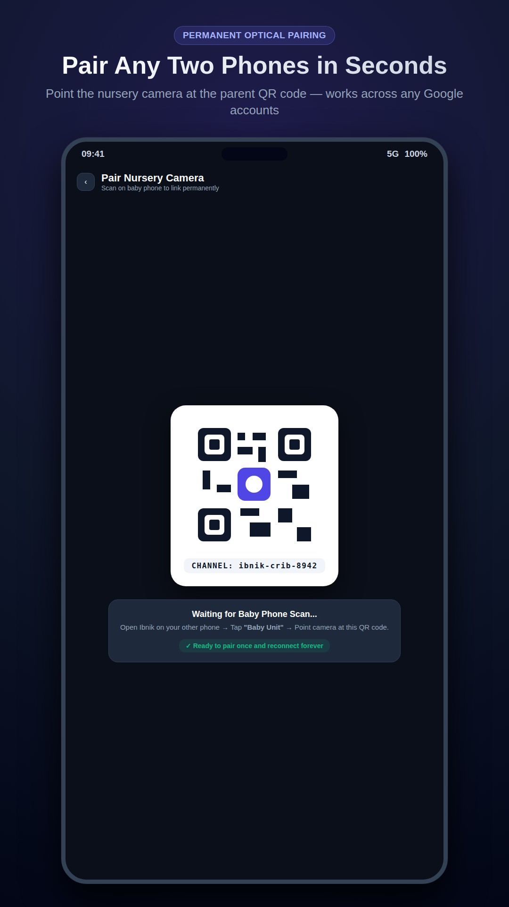
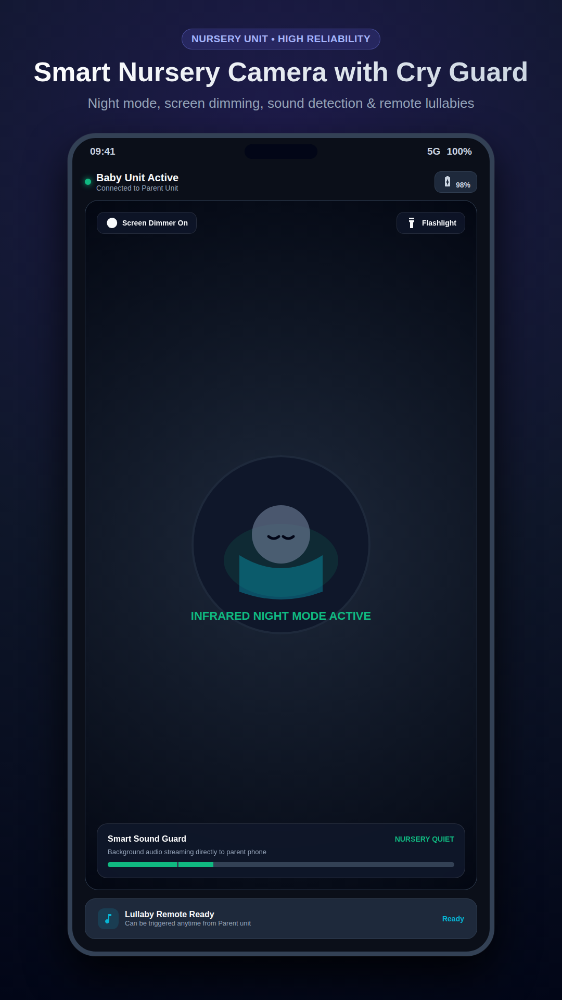
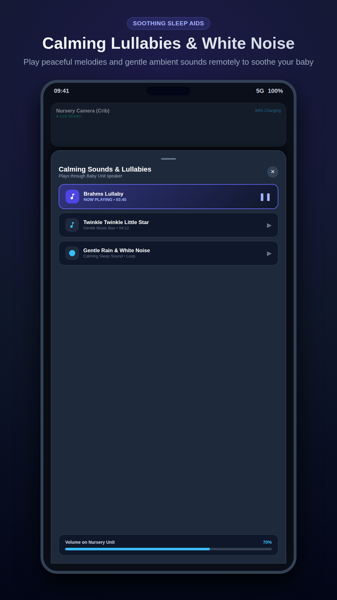

Turn any spare phone, tablet, or device into a commercial-grade baby monitor. Sub-second WebRTC video, offline home Wi-Fi streaming, intelligent cry detection, and two-way audio—with zero cloud storage and zero subscriptions.
Every screen is fine-tuned for high contrast, night nursery readability, zero-lag controls, and stress-free operation.

Experience ultra-responsive, zero-lag streaming with live decibel audio metering, push-to-talk two-way intercom, remote camera zoom, and instant flashlight control for checking the nursery without turning on bright room lights.

2. Dashboard
3. QR Pairing
4. Baby Unit
5. LullabiesEverything that subscription services charge $50/year for, open-sourced and engineered for reliability.
Discovers and connects directly over your home Wi-Fi via mDNS. Works completely offline even if your broadband internet goes down, with zero cloud bandwidth usage.
Full DTLS-SRTP military-grade encryption. Streams travel peer-to-peer directly between your phones. No video frames or audio packets are ever saved on cloud servers.
Comfort and soothe your baby immediately from the kitchen or bedroom using the ultra-clear push-to-talk talkback feature with automatic feedback cancellation.
Remotely trigger high-fidelity soothing tracks on the baby unit: womb heartbeat, gentle rainfall, white noise, and classic lullabies with a customized sleep timer.
Configurable sound sensitivity thresholds automatically trigger instant push notifications on your parent device the exact second your baby awakens.
Always know the nursery device's health. Live indicators display baby phone battery percentage, charging connection state, and Wi-Fi signal quality.
Parent unit continues streaming audio in the background even when your screen is locked in your pocket, powered by an efficient Android Foreground Service.
Check on your baby in pitch dark without disturbing their sleep. Remotely toggle the baby unit's flashlight softly directly from the parent monitor screen.
Both mom and dad can connect their phones or tablets simultaneously to watch the nursery stream without connection conflicts or subscription upgrades.
Why thousands of parents are ditching clunky $200 hardware monitors and $50/year subscriptions for Ibnik.
| Features | Ibnik (Free App) | Commercial Paid Apps | Hardware Baby Monitors |
|---|---|---|---|
| Price / Subscription | 100% Free / $0 | $4.99/mo or $49/yr | $120 – $250 upfront |
| Advertisements | ✓ Zero Ads | ✗ In-app ads & upsells | ✓ No ads |
| Video Streaming Latency | Sub-second (< 200ms) | 2.0s – 5.0s (HLS delays) | ~300ms (Limited range) |
| Offline Local Wi-Fi Mode | ✓ Works without Internet | ✗ Needs active internet | ✓ FHSS / Local Radio |
| End-to-End Encryption | ✓ DTLS-SRTP E2EE | ✗ Cloud media storage | Unencrypted / vulnerable |
| Two-Way Talkback | ✓ Included Free | ✗ Paywalled behind Pro | ✓ Included |
| Lullabies & White Noise | ✓ Built-in + Timer | ✗ Paywalled behind Pro | Basic mono beeps |
| Background Audio (Screen Locked) | ✓ Included Free | ✗ Paywalled behind Pro | Audio only units |
| Multi-Device / Both Parents | ✓ Unlimited Parents | ✗ Extra subscription fee | ✗ 1 parent screen only |
| Range Limit | Unlimited (Local & 4G/5G) | Unlimited (via Cloud) | ✗ ~300ft through walls |
No complicated account creation, no password remembering, no credit card required.
Download the Ibnik APK on any two Android phones or tablets (one for the nursery, one for the parent).
Tap "Baby Unit" on the nursery device. Tap "Parent Unit" on your everyday phone.
Point your parent phone at the QR code displayed on the nursery phone. Instantly connected over encrypted WebRTC!
Ibnik is designed as a masterclass in modern Cloud Native and Mobile Engineering. It combines a lightweight Go WebSocket signaling daemon, dual Coturn STUN/TURN media relay, and native Flutter WebRTC.
Clear answers to everything parents and engineers want to know.